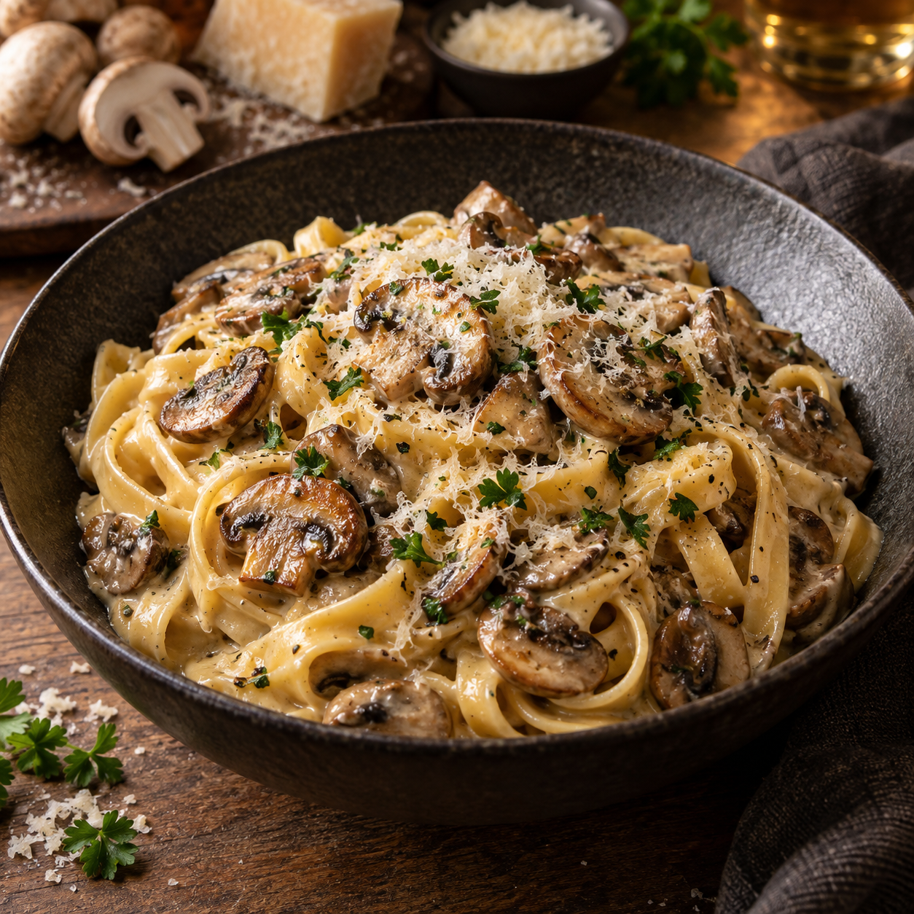

Unsere Klassiker · Pasta
Tagliatelle mit Champignons

Bei dieser Pilzpasta wird die Sahne langsam zu einer goldgelben, aromatischen Paste eingekocht. Zusammen mit kräftig gebratenen Champignons entsteht daraus eine besonders cremige Sauce.
Zutaten
400 gTagliatelle
400 gChampignons
400 mlSchlagsahne
1Schalotte
30 gButter
100 mlHühnerbrühe
60 gParmesan, frisch gerieben
½ BundPetersilie
Nach GeschmackSalz
EtwasNudelwasser
Zubereitung
- Die Sahne in eine breite Pfanne geben und bei mittlerer Hitze unter regelmäßigem Rühren einkochen. Sie soll erst dickflüssig und schließlich zu einer goldgelben, karamellisierten Paste werden. Dabei besonders zum Schluss ständig rühren.
- Währenddessen die Champignons putzen und in Scheiben oder Viertel schneiden. In einer zweiten heißen Pfanne zunächst ohne Öl kräftig anbraten, bis sie Farbe bekommen und ihre Flüssigkeit verdampft ist.
- Butter zu den Champignons geben. Die Schalotte fein würfeln, hinzufügen und glasig anschwitzen. Mit der Hühnerbrühe ablöschen und kurz einkochen lassen.
- Die Tagliatelle in reichlich Salzwasser al dente kochen. Vor dem Abgießen etwas Nudelwasser auffangen.
- Die karamellisierte Sahne zu den Champignons geben und gründlich zu einer cremigen Sauce verrühren. Mit Salz abschmecken.
- Tagliatelle, Parmesan und etwas Nudelwasser direkt zur Sauce geben. Alles schwenken, bis die Sauce glänzend an den Nudeln haftet. Petersilie fein schneiden, unterheben und sofort servieren.
Darauf kommt es an
Die Sahne braucht etwas Geduld: Erst wenn sie deutlich goldgelb wird, entsteht das besondere nussig-karamellige Aroma. Die Hitze dabei nicht zu hoch stellen, damit sie nicht anbrennt.